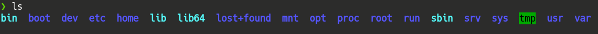
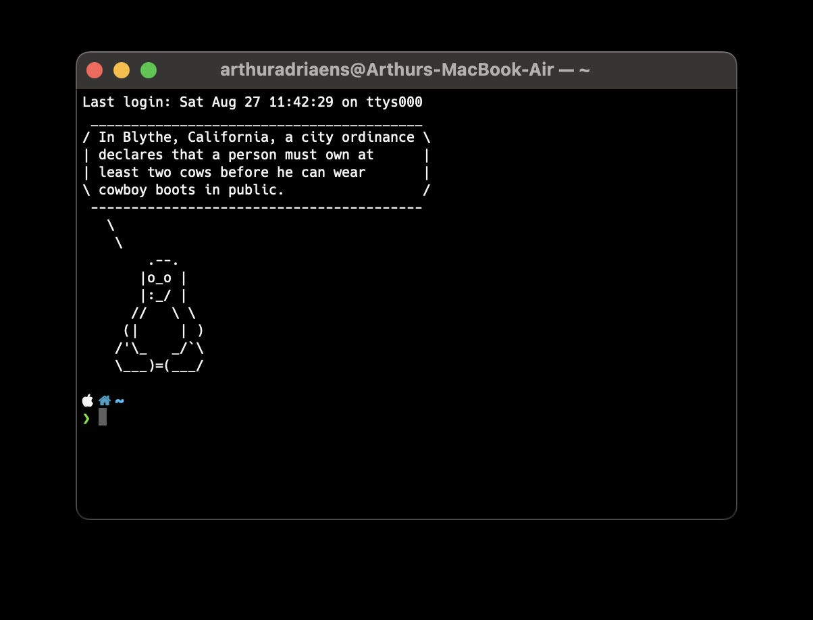

How does a unix computer handle packages?
This isn't necessary knowledge to program on your mac, but it does make it easier to memorize what follows.
In general, the filesystem of a unix-based PC (e.g a macbook but also all linux platforms)
have 'root' denoted as "/" in the filepath as the highest "file", next you have a lot of folders:

ignore the line ">ls", we will later on learn what this is. We're located at /home/USERNAME e.g /home/arthur, this is where you find your familiar folders such as Downloads, Desktop,...
Now when you install a program, it gets installed to the directory /bin. This is thus also the folder being checked when you search for a program to launch.
Terminal
That crazy looking program hackers seem to be working in in hollywood movies is actually going to be your second home if you get good at coding:

This is the terminal app, open it by just opening spotlight and typing "terminal" or if that doesn't work go to your launchpad \(\rightarrow\) other \(\rightarrow\) terminal and click it (yours isn't going to have the pinguin, nor the apple, house, tilde and green symbol). Now that we have it open, right click the icon on the bottom of the screen and pin it so you don't have to search for it every time (options\(\rightarrow\) keep in dock). If by opening a browser by clicking on the app icon or opening a file from finder is ordering a flight to somewhere then this is the cockpit of your pc, from here you control the plane. All the apps work through this terminal in the background, people used to have to do everything via this terminal but nowadays with everything being graphical it only gets used by.. well.. Us!: Programmers. you might see a "~" at the line you're currently on in the app, this means the "home directory", i.e the USERNAME (In my case arthuradriaens) directory where all your files are located such as Downloads and Documents. Now I'll tell you about some basic commands you'll use very often in your coding journey and you can now test out by typing them in the terminal and pressing enter:
-
up,down,left and right arrows: move around, e.g up arrow shows you the previous run command and left and right mvoes around the text you typed in the terminal
-
ls: See all the files in the current directory
-
cd: move to a directory, i.e "cd Downloads" would move to the directory downloads, to go up a directory type "cd ..". Notice that you can only move to Downloads if it's in your current directory, you can, however always go to whatever directory you want if you type the full file path e.g "cd /home/USERNAME/Downloads". With the exception being that if you want to go back to the home directory you can just "cd" (i.e without any arguments).
Homebrew
To install programs and update them we'll need something called a "package manager", this makes our lives way easier. The package manager I use for macbook (and probably is the only one available) is called homebrew and is installed by going to Their website, clicking on the little clipboard symbol (as this makes the line copy to your "clipboard": the place where command+c is stored) under Install Homebrew, pasting in the terminal and pressing "enter".
This might prompt you some questions in the terminal app, try to read the questions and if it's a yes or no question it will end in "Y/N?", to answer yes you just type "Y" and hit enter, same if you want to answer no. If the question has a suggested answer it will show up like this: "[Y]/N", i.e it's adviced to answer "Y".
Using homebrew
After you're done answering the questions try out homebrew by installing python! To do this simply type
"brew install python" and look at it doing everything for you! To install packages that you might need in python (e.g numpy, matplotlib,...) you use pip so for example "pip install numpy" installs numpy. A good command to memorize is "brew upgrade", this upgrades all your packages to their latest version.
Using the terminal to launch programs
Say you created a file hello.py (e.g using Vim which we'll get to later) in your downloads directory, to execute this file go to your downloads directory in the terminal (using cd as mentioned before) and type "python hello.py". To stop a program that freezes in your terminal you can hit the key combination "ctrl+c".
Vim
It can be quite useful (and fast) to stay in the terminal and not have to open up a text editor to write your programs, a tool I like quite a lot for this is vim. Of course this is optional and you can still use vscode or something similar if you want to but this can also be useful to quickly change a file. You install it the way you would (now) install any program, by writing "brew install vim" in your terminal and hitting enter. To make for example the file hello.py in our downloads folder we can now move to our Downloads folder and type "vim hello.py". You might find this weird at first as you can't really type anything, this is because vim has "modes" and you're now in "command mode", to insert text hit the "i" key so you enter into "insert" mode. You can now start typing, as you get better at vim you'll really appreciate this "mode" style of typing as a lot can be done using the "command" mode, but for now we'll keep it simple and say that you can just type something like "print("hello")" and write and quit by hitting the "escape" key to get back into command mode and typing ":wq" to Write (w) and Quit (q). To try out vim open op a large text file/program (basically the same thing as extensions like ".txt" or ".py" don't really mean anything and are just like the name of the program) with vim and in command mode move around using the "h", "j", "k" and "l" keys. These keys are the standard for moving around the file as you don't have to leave your fingers off the keyboard, you can jump a lot up (or down) by "repeating" e.g typing "10k" will make your cursor jump up 10 lines (same for "10j") it might take some time to get used to a lot of these commands but some useful ones are:
-
yy: copy the full line
-
p: paste
-
a: enter insert mode after the current character
-
dw: delete word, i.e delete the word you're standing on
-
ciw: change in word, delete the word you're standing on and go into insert mode
-
. : yes just the "." key, this repeats an action, so if you for example dit a "ciw" and wrote "rabbit" if you then hit escape to go into command mode and hovered over the word "bird" and hit dot, the word will change to "rabbit".
-
o: insert below the current line
-
w: word, i.e move forward a full word
-
b: back, i.e move backwards a full word
-
G: move all the way down in a file
-
gg: move all the way up in a file
-
u: undo the previous command
Vim bindings
This is REALLY optional but you'll appreciate the fuck out of it if you are used to vim, if you type long-ass commands in your terminal and you need to change something way at the beginning it can be quite the pain. This is solved by enabling vi-mode in your zsh profile (zsh is the shell you're interfacing with using the terminal, if you have no clue what all of this means, I'm planning on doing a blog on general terminology). You can do this by going to your home folder and editing the .zshrc file, there in some line add 'bindkey -v' and now, if you hit escape on the terminal, it works the same as in vim!